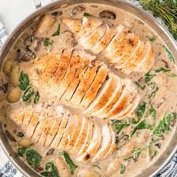

One-Pan Creamy Chicken & Gnocchi

When everything cooks together everyone wins. The chicken will finish cooking in the sauce making it the easiest and most comforting meal. It's what weeknight dinner dreams are made of!
Ingredients
- 1 1/2 lb. boneless skinless chicken breasts Kosher salt
- ...
- 3 c. packed baby spinach
Steps
- Season chicken on both sides with salt and pepper. In a large skillet over medium-high heat, heat 1 tablespoon oil. Add chicken and cook until golden, 4 minutes per side. Remove from skillet.
- ...
- Slice chicken and return to skillet. Season with more salt and pepper to taste.